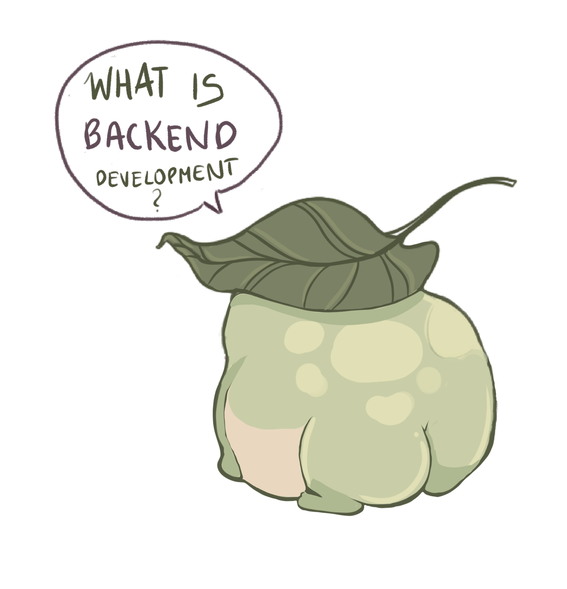
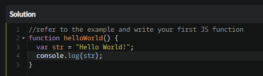

So we defined what Frontend Development is, so what is Backend Development? It is also referred to as ‘’server - side development”, which already gives a small hint to what it is. While Frontend takes care of the client - side and making everything look appealing, Backend development is the process of building and maintaining the server - side of websites and applications. It deals with the server, databases and especially the application logic that allows functionality and data management of a web application.
While the Frontend Developers deal with mainly HTML and CSS, Backend Developers work with Java and Node.js, but also a lot of times with Python or Ruby. With the help of these programming languages, the developers are able to implement the logic that runs the server. They also take care of the API, which we analyzed previously with the help of TikTok.
KatasTo further deepen our knowledge of web design, we received a website link that offers exercises to help with understanding the whole coding thing! Here are the first three exercises as example, though we finished the first ten on the list.
